| 日付 | 2026年10月17日（土） |
|---|---|
| 山域 | 道志山塊 |
| メンバー | グループ（6名） |
| 山行形態 | 日帰り |
| アクセス | 電車、バス、タクシー |
| ルート (Map) | 藤野駅 (8:54) - (9:46) 石楯山 - (11:23) 鶴島金剛山 (11:41) - (11:55) 名倉金剛山 - (13:03) 名倉入口 |
久々のグループ登山。夏に宿泊山行に何回か行く予定だったが天候不順で流れてしまった。
今回の目的地は鶴島金剛山。道中にあるアートを楽しめる山らしい。
こんな場所にこんな山があるとは知らなかった。
藤野駅に集合。標高210m。
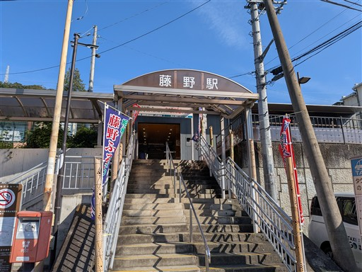
山の斜面にあるラブレター。
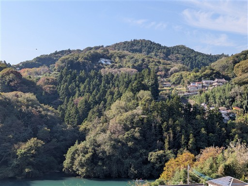
この道はアートの道。道端に様々な近代アートが飾られている。
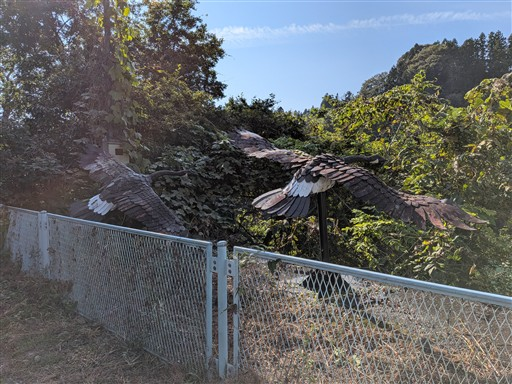
相模湖。釣りボートがあちらこちらに浮かんでいる。
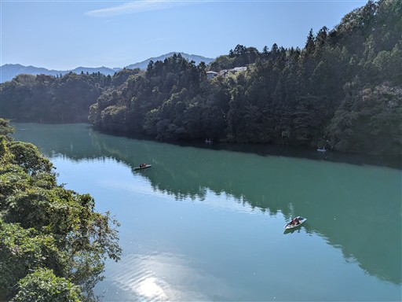
長い車道を歩いて登山口に到着。
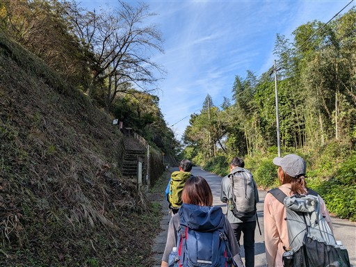
展望台からの眺め。左に見える格好良い山は御前山の辺りだろうか？
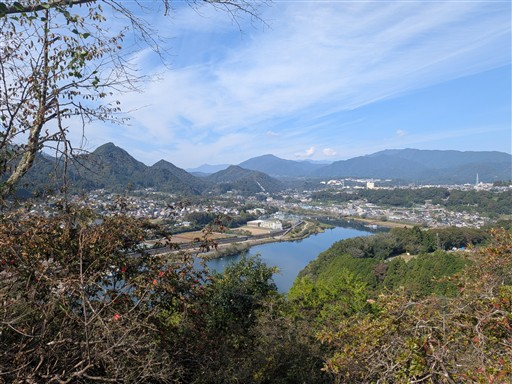
石楯山山頂にあるしあわせの鐘。
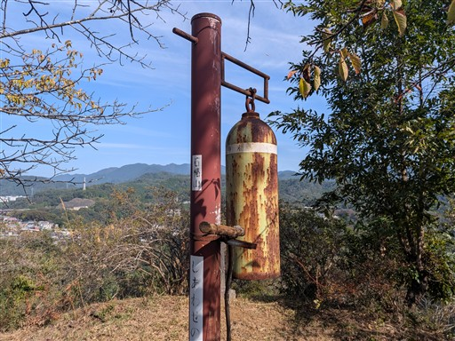
樹林帯の中の道になる。
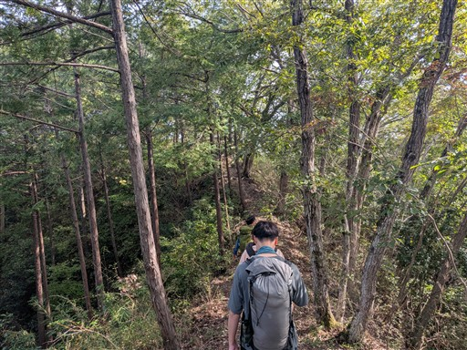
大正池のような立ち枯れの木がある池。
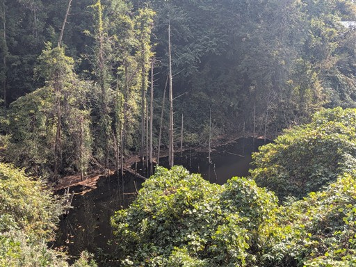
包丁岩。手前に包丁のような痩せ尾根がある。歩いてみたくなる尾根だ。
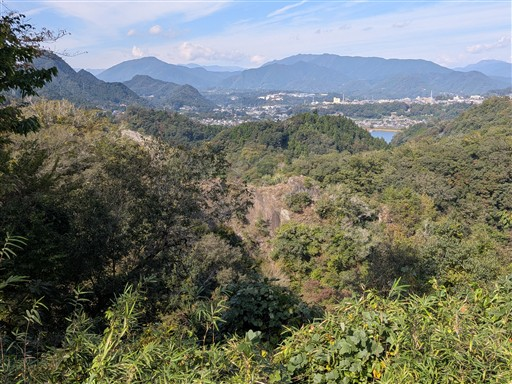
これもアート。
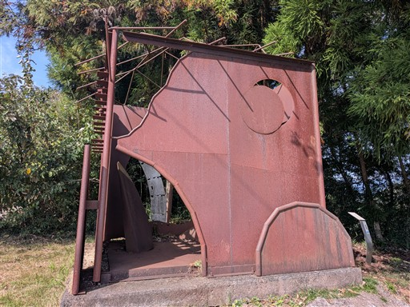
虫のようなアート。
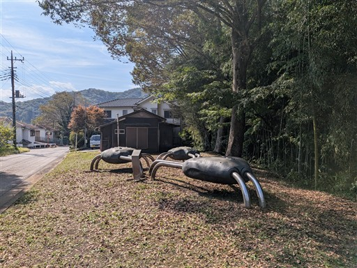
ここから2つの目が見えるらしいが、どんなに目を凝らしても見えなかった。
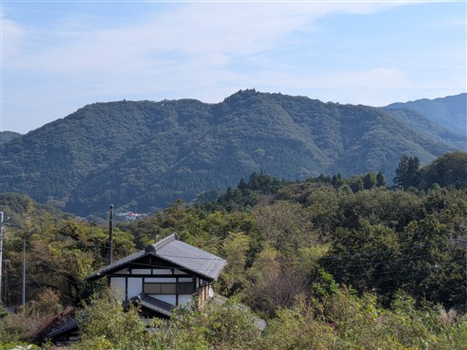
丸いアート。
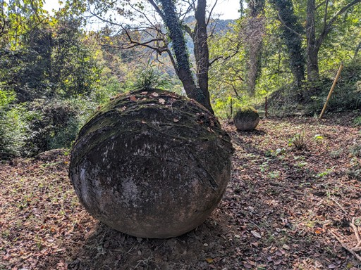
歯みたい。
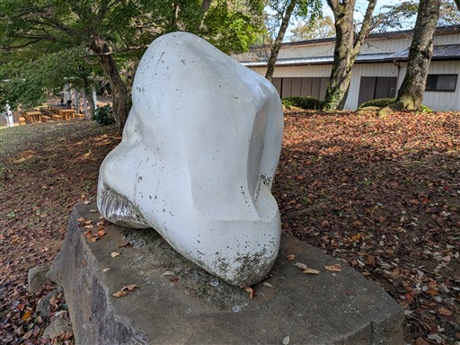
この辺りは笹が密集している。
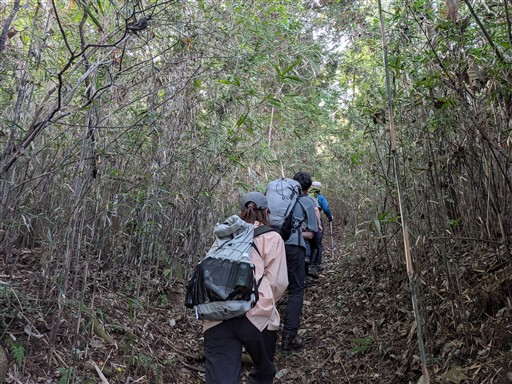
尾根に出たら気持ちの良い道になる。
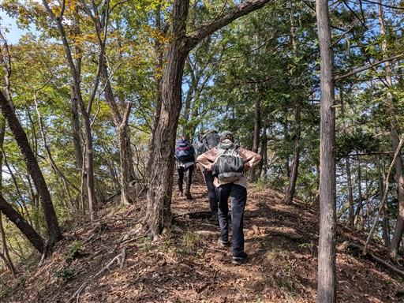
鶴島金剛山に到着。標高491m。
山頂はかなり狭い。
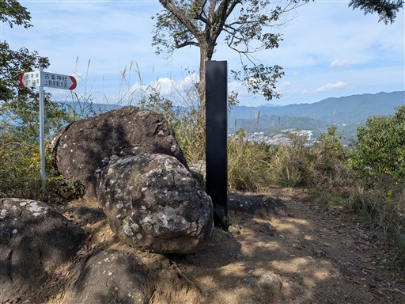
山頂にある石祠。
メンバーの一人がヤマビルにやられる。早期発見だったので大事には至らなかった。
晴れの尾根道で被害に合うとは思わなかった。
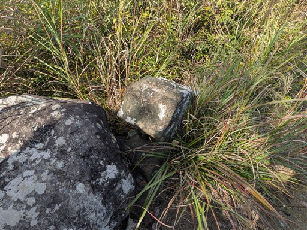
山頂からは展望が広がる。
低い山なので大展望という訳にはいかないが、青空が気持ち良い。
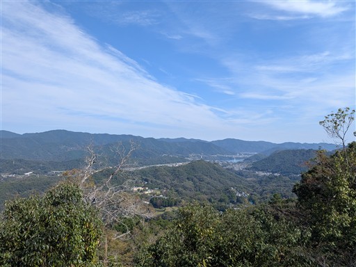
小休止をとったら下山開始。こんな時期にツツジの花が咲いている。
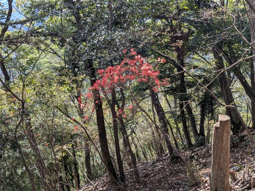
登山道にある柵。ちょっと過剰だ。
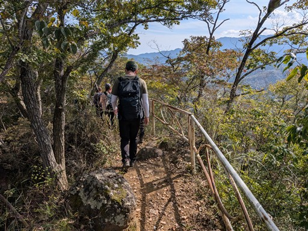
こちらは名倉金剛山。標高456m。
相変わらず冴えない藤野町十五名山。本当に名山は一つでもあるのか？
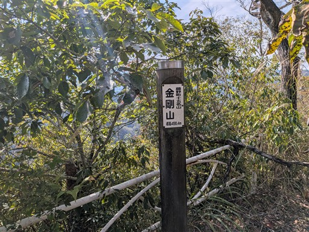
山頂に柿の木があって、実がなっている。
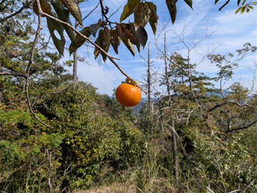
ここからも様々なアートが現れる。
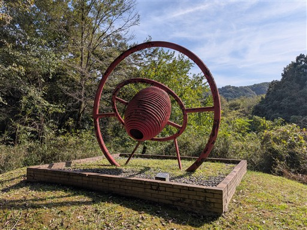
名倉入口バス停に到着。標高190m。
ザックを置いて休憩していたら、バスが通り過ぎて行ってしまう。
仕方なくタクシーで移動。
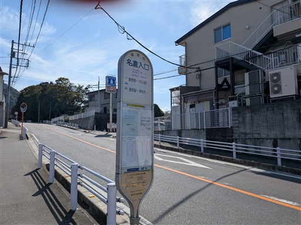
やまなみ温泉で入浴。
短い山だったが、ところどころに現れるアートと、少しの展望を楽しめる登山だった。
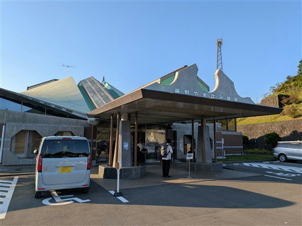